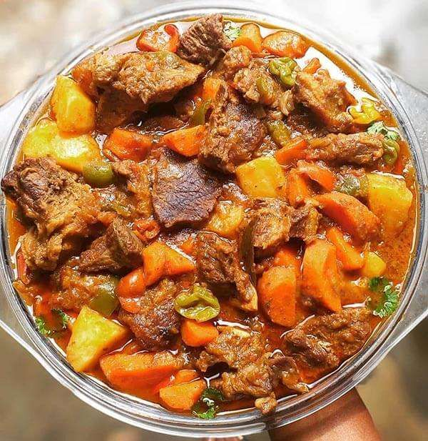

Mafé (Afrique de l'Ouest) – Ragoût de viande ou de poisson dans une sauce onctueuse à base d'arachides 🍽
Ingrédients :
- 500 g de viande de bœuf ou poulet
- 2 cuillères à soupe de pâte d’arachide
- 2 tomates mûres coupées en dés
- 1 oignon finement haché
- 2 gousses d’ail écrasées
- 1 cube de bouillon
- 1 cuillère à soupe de concentré de tomate
- 1 piment (facultatif)
- 500 ml d’eau
- Huile, sel et poivre
Instructions :
- 1. Faire revenir la viande et les oignons dans l’huile chaude.
- 2. Ajouter les tomates, l’ail et le concentré de tomate. Laisser cuire 10 min.
- 3. Diluer la pâte d’arachide dans un peu d’eau et l’incorporer au mélange.
- 4. Ajouter le cube de bouillon, le sel et le poivre.
- 5. Verser le reste de l’eau et laisser mijoter 40 min.
- 6. Servir chaud avec du riz ou du couscous.